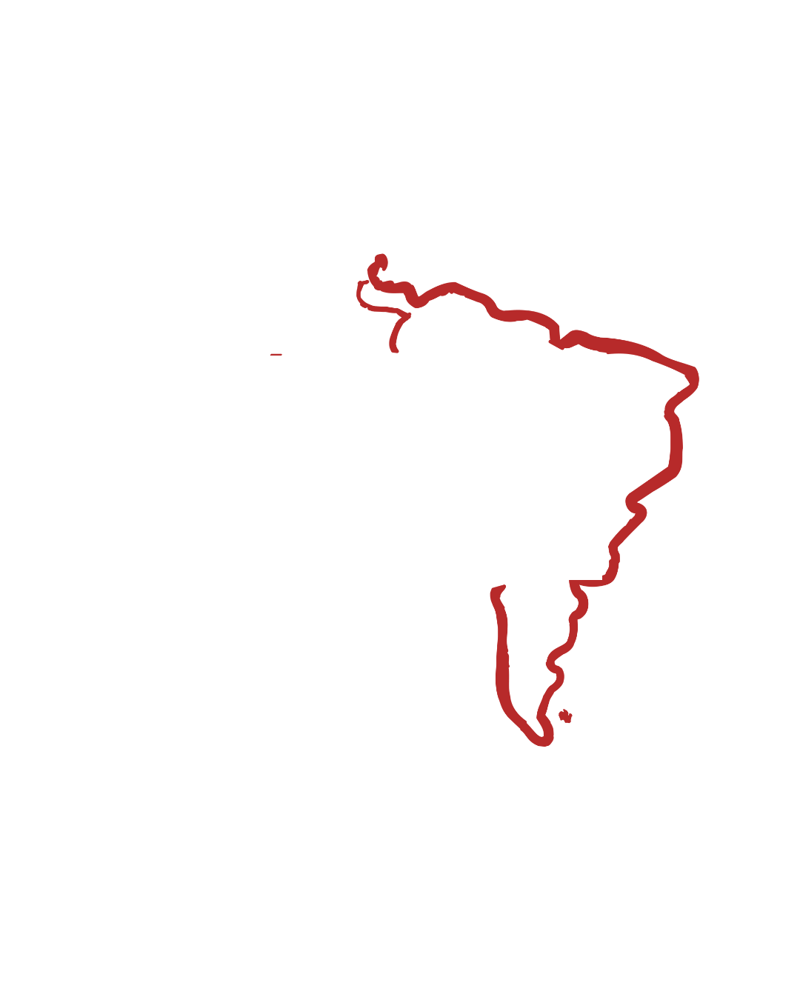
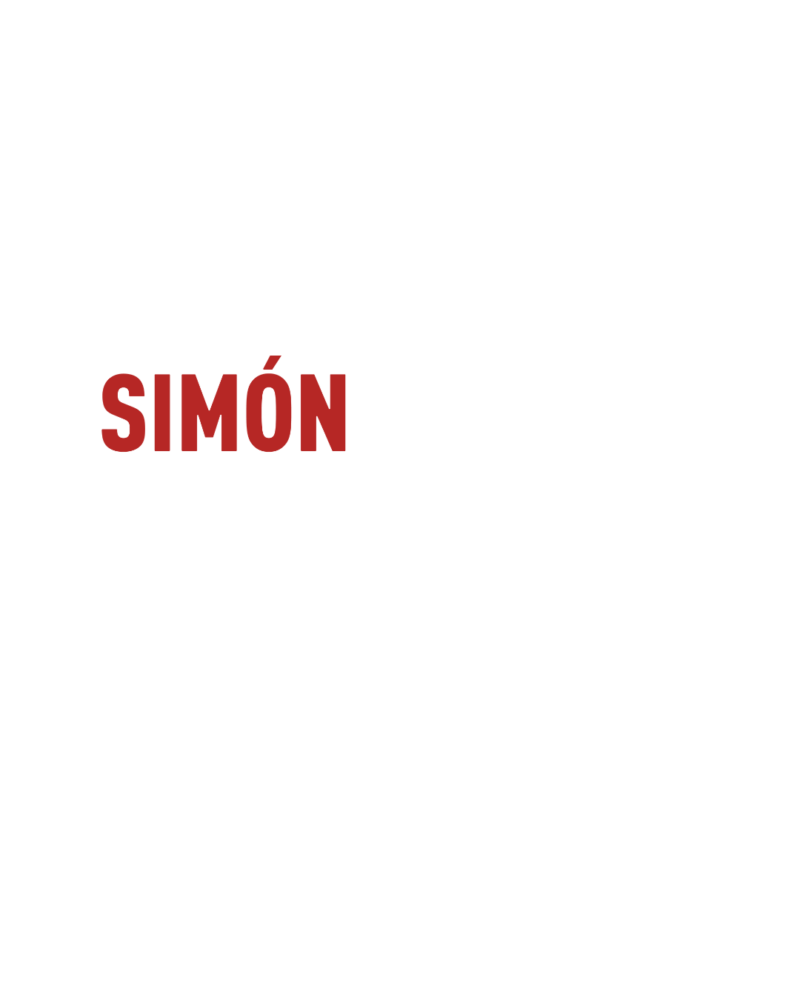
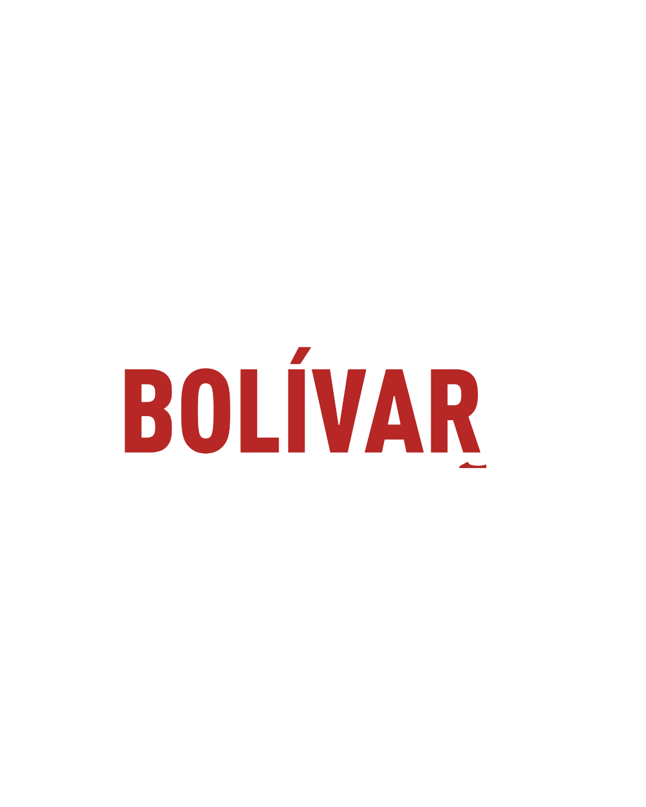

La Bolívar con vos · Agrupación Simón Bolívar, FTS UNLP
RESULTADOS



Agrupación Simón Bolívar · Conducción del CEFTS
Somos estudiantes de esta facultad, como vos. Entrá y conectate con la FTS: el organizador de tu carrera, los materiales para estudiar y las fechas que no te podés perder. Armá tu cuenta y lo tuyo te sigue a cualquier teléfono.